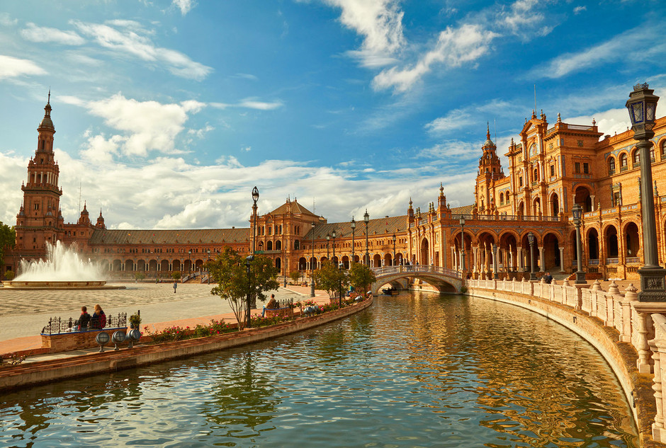

Alcalá de Henares.
A pocos kilómetros de Madrid se encuentra Alcalá de Henares, una preciosa ciudad declarada Patrimonio de la Humanidad en la que la cultura es protagonista. ... Su Universidad es una de las más antiguas de España y fue durante siglos una de las más importantes del país. Además, es conocida como la “cuna de Miguel de Cervantes”.
Más información sobre Alcalá de Henares.
Barcelona.
Barcelona no es solo una de las más bonitas, sino también una de las ciudades más visitadas de España. ... Su maravilloso ambiente, sus monumentos y su cultura la convierten en una ciudad muy apetecible que atrae cada año a millones de personas. Entre las cosas más importantes que ver en Barcelona, son de obligada visita algunos de los 48 lugares declarados Patrimonio de la Humanidad en España, como el Palau de la Música Catalana, el Hospital de Sant Pau y varias obras de Antonio Gaudí.

Más información sobre Barcelona.
Sevilla.
La ciudad hispalense, al contrario que sus predecesoras, sí ha reducido su número de habitantes en estos últimos 15 años ya que hoy tiene 693.878 y en 2000 tenía 700.716. ... Su casco antiguo es conocido por ser el más extenso de España y también uno de los más grande de Europa. Además, es un destino español muy solicitado por los turistas extranjeros, refleja el arte y la cultura del sur de España.

Más información sobre Sevilla.